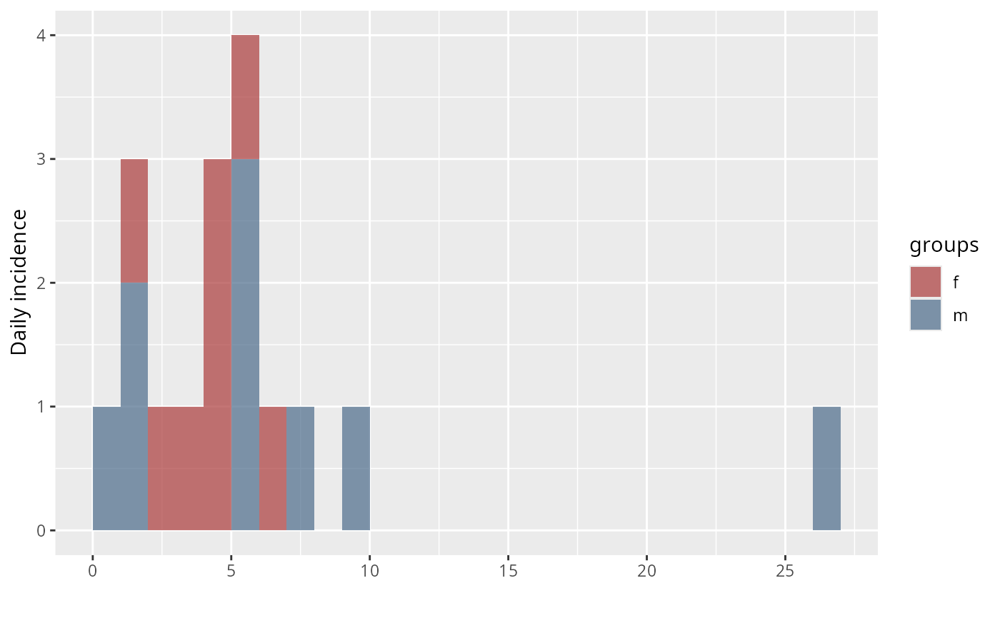

These functions convert incidence objects into other classes.
# S3 method for class 'incidence'
as.data.frame(x, ..., long = FALSE)
as.incidence(x, ...)
# S3 method for class 'matrix'
as.incidence(
x,
dates = NULL,
interval = NULL,
standard = TRUE,
isoweeks = standard,
...
)
# S3 method for class 'data.frame'
as.incidence(x, dates = NULL, interval = NULL, isoweeks = TRUE, ...)
# S3 method for class 'numeric'
as.incidence(x, dates = NULL, interval = NULL, isoweeks = TRUE, ...)An incidence object, or an object to be converted as
incidence (see details).
Further arguments passed to other functions (no used).
A logical indicating if the output data.frame should be 'long', i.e. where a single column containing 'groups' is added in case of data computed on several groups.
A vector of dates, each corresponding to the (inclusive) lower limit of the bins.
An integer indicating the time interval used in the computation of the incidence. If NULL, it will be determined from the first time interval between provided dates. If only one date is provided, it will trigger an error.
A logical indicating whether standardised dates should be
used. Defaults to TRUE.
Deprecated. Use standard.
Conversion to incidence objects should only be done when the
original dates are not available. In such case, the argument x
should be a matrix corresponding to the $counts element of an
incidence object, i.e. giving counts with time intervals in rows and
named groups in columns. In the absence of groups, a single unnamed columns
should be given. data.frame and vectors will be coerced to a matrix.
the incidence() function to generate the 'incidence' objects.
## create fake data
data <- c(0,1,1,2,1,3,4,5,5,5,5,4,4,26,6,7,9)
sex <- sample(c("m","f"), length(data), replace=TRUE)
## get incidence per group (sex)
i <- incidence(data, groups = sex)
i
#> <incidence object>
#> [17 cases from days 0 to 26]
#> [2 groups: f, m]
#>
#> $counts: matrix with 27 rows and 2 columns
#> $n: 17 cases in total
#> $dates: 27 dates marking the left-side of bins
#> $interval: 1 day
#> $timespan: 27 days
#> $cumulative: FALSE
#>
plot(i)

## convert to data.frame
as.data.frame(i)
#> dates f m
#> 1 0 0 1
#> 2 1 1 2
#> 3 2 1 0
#> 4 3 1 0
#> 5 4 3 0
#> 6 5 1 3
#> 7 6 1 0
#> 8 7 0 1
#> 9 8 0 0
#> 10 9 0 1
#> 11 10 0 0
#> 12 11 0 0
#> 13 12 0 0
#> 14 13 0 0
#> 15 14 0 0
#> 16 15 0 0
#> 17 16 0 0
#> 18 17 0 0
#> 19 18 0 0
#> 20 19 0 0
#> 21 20 0 0
#> 22 21 0 0
#> 23 22 0 0
#> 24 23 0 0
#> 25 24 0 0
#> 26 25 0 0
#> 27 26 0 1
## same, 'long format'
as.data.frame(i, long = TRUE)
#> dates counts groups
#> 1 0 0 f
#> 2 1 1 f
#> 3 2 1 f
#> 4 3 1 f
#> 5 4 3 f
#> 6 5 1 f
#> 7 6 1 f
#> 8 7 0 f
#> 9 8 0 f
#> 10 9 0 f
#> 11 10 0 f
#> 12 11 0 f
#> 13 12 0 f
#> 14 13 0 f
#> 15 14 0 f
#> 16 15 0 f
#> 17 16 0 f
#> 18 17 0 f
#> 19 18 0 f
#> 20 19 0 f
#> 21 20 0 f
#> 22 21 0 f
#> 23 22 0 f
#> 24 23 0 f
#> 25 24 0 f
#> 26 25 0 f
#> 27 26 0 f
#> 28 0 1 m
#> 29 1 2 m
#> 30 2 0 m
#> 31 3 0 m
#> 32 4 0 m
#> 33 5 3 m
#> 34 6 0 m
#> 35 7 1 m
#> 36 8 0 m
#> 37 9 1 m
#> 38 10 0 m
#> 39 11 0 m
#> 40 12 0 m
#> 41 13 0 m
#> 42 14 0 m
#> 43 15 0 m
#> 44 16 0 m
#> 45 17 0 m
#> 46 18 0 m
#> 47 19 0 m
#> 48 20 0 m
#> 49 21 0 m
#> 50 22 0 m
#> 51 23 0 m
#> 52 24 0 m
#> 53 25 0 m
#> 54 26 1 m
## conversion from a matrix of counts to an incidence object
i$counts
#> f m
#> [1,] 0 1
#> [2,] 1 2
#> [3,] 1 0
#> [4,] 1 0
#> [5,] 3 0
#> [6,] 1 3
#> [7,] 1 0
#> [8,] 0 1
#> [9,] 0 0
#> [10,] 0 1
#> [11,] 0 0
#> [12,] 0 0
#> [13,] 0 0
#> [14,] 0 0
#> [15,] 0 0
#> [16,] 0 0
#> [17,] 0 0
#> [18,] 0 0
#> [19,] 0 0
#> [20,] 0 0
#> [21,] 0 0
#> [22,] 0 0
#> [23,] 0 0
#> [24,] 0 0
#> [25,] 0 0
#> [26,] 0 0
#> [27,] 0 1
new_i <- as.incidence(i$counts, i$dates)
new_i
#> <incidence object>
#> [17 cases from days 0 to 26]
#> [2 groups: f, m]
#>
#> $counts: matrix with 27 rows and 2 columns
#> $n: 17 cases in total
#> $dates: 27 dates marking the left-side of bins
#> $interval: 1 day
#> $timespan: 27 days
#> $cumulative: FALSE
#>
all.equal(i, new_i)
#> [1] TRUE